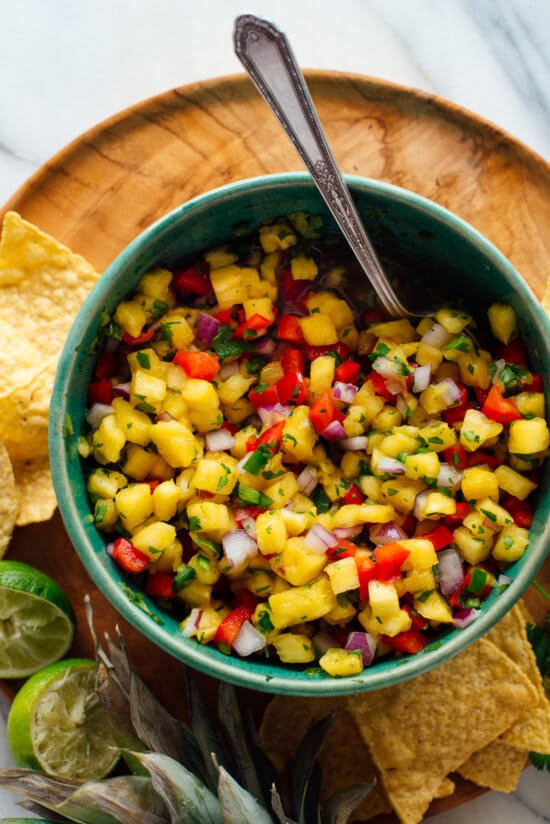

Fresh Pineapple Salsa

Description
Looking for a fun, fresh party appetizer? This colorful pineapple salsa recipe will be a big hit. It’s a little sweet, a little spicy, and 100% delicious.
Perhaps pineapple salsa sounds crazy at first glance, but it’s not when you think about it. Tomatoes are technically fruit, too, and they’re also sweet in flavor. If you don’t believe me, I dare you to give this pineapple salsa a try!
Ingredients
- 3 cups diced fresh pineapple (about 1 medium)
- 1 red bell pepper, chopped
- ½ cup chopped red onion (about ½ small onion)
- ¼ cup chopped fresh cilantro
- 1 medium jalapeño*, seeds and ribs removed, finely chopped
- 3 tablespoons lime juice (from about 1 ½ limes), or more if needed
- ¼ teaspoon fine sea salt
Instructions
-
In a medium serving bowl, combine the pineapple, bell pepper, onion, cilantro, and jalapeño. Add the lime juice and salt, and stir to combine.
-
Season to taste with additional lime juice (for zing) and/or salt (for more overall flavor) if it doesn’t taste amazing just yet.
-
For best flavor, let the pico de gallo rest for 10 minutes or longer before serving. It’s best served fresh but keeps well, chilled, for up to 4 days.